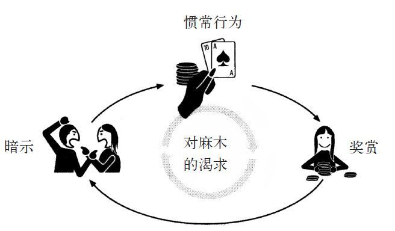
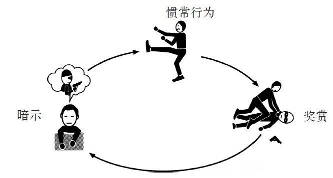
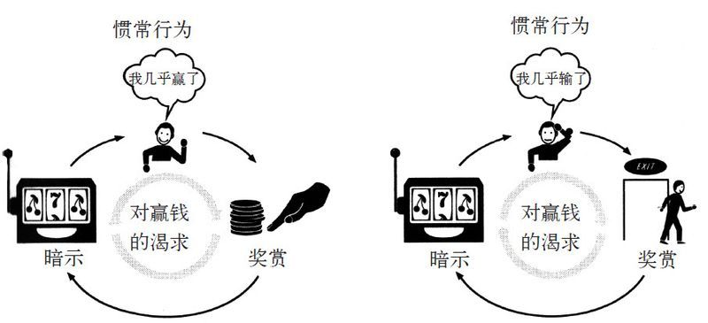

在很多年后，她才意识到，原来矛盾在那个清晨就已经萌发了。那天早上，安琪·巴赫曼无所事事地坐在家里，悠闲地看着电视，漫无目的地想着要重新整理一下她装银首饰的抽屉。
她最年幼的女儿已经上了好几周幼儿园了，而大女儿和二女儿在读中学。她们有自己的朋友，有很多课外活动，还会与朋友谈论许多她无法明白的八卦。她的丈夫是一名土地测量师，每天重复着朝8晚6的工作。屋子里除了巴赫曼之外没有别人。她19岁步入婚姻的殿堂，20岁有了第一个孩子，从那以后，她的日常生活就围绕着准备午餐，与女儿们玩假扮公主的游戏，开车接送女儿们上学、放学，这是近20年来的第一次，她真真切切地感到孤单。高中时，同学们都说，她应该做模特，因为她是那么漂亮。但事与愿违，她退了学，然后嫁给了一个吉他手，最终他有了一份实实在在的工作，而她就顺其自然地成为了一位全职妈妈。早上10点半，女儿们都上学了，巴赫曼又一次用纸将厨房里的钟遮住，强迫自己停止每3分钟就看一下时间的习惯。接下来，她又不知道自己应该干什么好了。
那一天，她跟自己打赌，如果她能熬到中午不疯掉，或者不吃冰箱里的蛋糕，就出去找点儿乐子。然后，她用接下来的90分钟来想有什么有趣的事可以做。12点的钟声响了，她化了一点妆，穿上一条靓丽的裙子，然后开了20分钟的车到了一个船上赌场。虽然是星期四的中午，但是赌场里还是人山人海。与巴赫曼看肥皂剧和叠衣服的单调生活不同，这里的人都忙着自己手头丰富多彩的事。
在入口处有一支乐队在演奏。一位女士在派送免费的鸡尾酒,巴赫曼在自助餐区吃了虾。整个过程都让她觉得自己过得很奢侈，就像以前逃学的时光。她走到玩21点的赌桌前，此时荷官正在耐心地解释游戏的玩法。在输了40美元时，她瞟了瞟手表，忽然发觉两个小时就这样过去了，她要赶去接她最小的女儿。那天吃晚餐时，她第一次有了别的东西可以聊，而在此之前，她只能聊自己看《价格猜猜猜》节目时猜赢了哪个参赛选手。
安琪·巴赫曼的父亲原是一名卡车司机，后来，为了追寻自己的理想，他在中年时成为了一名小有名气的词曲作家。安琪·巴赫曼的兄弟也成了词曲作家，并且得到过一些奖。而当父母介绍她的时候，都将她称为全职妈妈。
巴赫曼告诉我:“我觉得我是最不济的那个了。我知道我很聪明，我知道我是一个好妈妈。但没有东西让我理直气壮地说，这就是我的特别之外。”
去过赌场一次之后，巴赫曼开始每周五去一次。这是对一个星期以来独守空房、保持屋子的清洁，并且神志清醒的小小奖励。她知道赌博会造成麻烦，所以她为自己设下了严厉的限制。每次去赌场，不能够在21点的桌上停留超过1个小时，而且输完了口袋里的钱，就不能再赌了。“我把它看作某种工作，”她说，“我从来不在中午前离开家，而我总是准时去接我的女儿。我十分遵守自己定下的规定。”
她的赌运越来越好了。刚开始，她很难用她的钱玩上一个小时。但半年内，她学到了足够的技巧，能够让她调整自己的规定，玩上两三个小时，并且在她走时，钱还没花完。一天下午，她在21点上用80美元赢了530美元，这笔钱足够用来买杂货，支付电话账单，还能够存一些钱到应急基金里。从那以后，赌场的所有者哈拉斯娱乐公司向她寄送了免费自助餐优惠券，她能够在星期六晚上带她的家人吃自助餐。
先说明一下，巴赫曼赌博的艾奥瓦州仅仅是在几年前才将赌博合法化。1989年前，州立法者们担心卡牌和骰子的诱惑对很多居民来说都很难抗拒。这个忧虑从国家建立时起就已经存在了。“赌博是贪婪之子，是不法之兄，是罪恶之父。”乔治·华盛顿在1783年写道，“这是罪恶的温床……总而言之，这种令人厌恶的活动毫无用处，并且很多人因它而受到伤害。”
实际上，要保护人们免受坏习惯的伤害，应该首先考虑清楚什么行为要被定义成“坏习惯”。这些所谓的坏习惯其实都是立法者早起享有的特权。卖淫、赌博、在安息日里卖酒、售卖色情出版物、发放高利贷、婚外情（如果你品位独特，还有婚内情）等，都是法律中明文规定违法或者尝试用严厉的（而且通常效果不好）条款约束的行为。
当艾奥瓦州将赌博合法化后，立法者们充分考虑到了要对船上赌场的活动进行限制，规定每次下注不能超过5美元，并且每人每次在赌场里输掉超过200美元就不能再赌了。然而，在之后几年，该州的一些赌场陆续搬迁到密西西比州，因为那里对赌场没有设限。因此，艾奥瓦州放宽了对赌场的限制。2010年，从赌博一项收到的超过2.69亿美元的税款增加了该州的财政收入。
安琪·巴赫曼的父母都是烟龄很长的烟民，在2000年的时候，他们开始出现肺病的症状。巴赫曼每周乘飞机去田纳西州看望他们，帮他们买日常杂货和做饭。当她回到丈夫与女儿身边时，孤单的感觉更加强烈了。有时候家里一天没人，她会胡思乱想，觉得好像朋友们都将她遗忘了，而家人也好像不再需要她了。
巴赫曼担心她的父母，她觉得丈夫更在意的是他的工作，而对她的焦虑无动于衷，这让她觉得很伤心，并且觉得她在女儿们成长的过程中付出了许多，而她们没有意识到现在的她很需要安慰，由此心中有了丝丝怨恨。但是每当她坐在赌桌上，这些不悦的情绪便渺无踪影。从此，她不用去探望父母时，就每周去两次赌场，然后发展到每个星期一、星期三和星期五都去。她仍然对自己有规定，但是她已经有几年的赌龄，也懂得了真正的赌徒的规矩。她每次下注都不会少于25美元一手，而且总是一次下两手。她说：“相比下注限度低的赌桌，在下注限度高的赌桌上更能赢钱。在运气到来之前，你要顶得住一些损失。我见过有人带着150美元来，赢了1万美元。我知道只要我遵循自己的规则，也一定能够这样。我能够控制住自己。”[8]从那时起，她就不再需要考虑要不要拿下一张牌或者将赌注翻倍，她只知道下意识地做出判断，就像有健忘症的尤金·保利那样，最后总能选到正确的长方形纸板。
2000年里的一天，巴赫曼带着6 000美元从赌场回家，这足够支付两个月的房租并结清门前堆积起来的信用卡账单了。另一次，她赢了2 000美元。有时候她会输，但这是赌博的一部分。聪明的赌客明白，总要输点儿才会赢。最终，哈拉斯娱乐公司给她划了信用额度，让她不用带太多现金。其他玩家找到她，坐到她所在的桌子上，因为她知道怎么赌。在自助餐上，主持让她坐在最前面。“因为我知道如何赌博，”她说，“我知道这样听起来就像一些不知道自己有问题的人说自己没问题一样，但是我所犯的唯一错误是没有退出，而我的玩法一点儿问题都没有。”
巴赫曼的规则随着她输赢规模的变化而变得更灵活。一天，她在一小时里输掉800美元，然后在40分钟里赢了1 200美元。然后运气急转直下，她又输掉了4 000美元。另一次，她早上输了3 500美元，下午1点赢了5 000美元，而下午又输了3 000美元。赌场记录着她的输赢，而她自己已经赌糊涂了。
然后，有一个月，她的银行账户里没有足够的钱来支付电费了。她向她的父母陆续借了一点儿钱。头一个月她借了2 000美元，第二个月又借2 500美元。这钱不算多，她的父母有。
巴赫曼从来没有酗酒、吸毒或者暴饮暴食的问题。她只是一位普通的母亲，经历了平凡人都有的起起落落。所以，那让她陷入赌博无法自拔的，是一日不去赌场就会心烦意乱或者烦躁不安的感觉，是她发现自己无时无刻不在想着赌博，还有那放开赌给人的冲动，这一切让她猝不及防。这种情况是曾经没有过的，直到赌博主宰了她的生活时，她才突然发现这是个问题。回顾过去，这成瘾的整个过程似乎找不到一条清晰的分界线，某天赌博是一种乐趣，但是第二天就赌得一发不可收拾了。
到2001年，她每天都去赌场。每当她跟丈夫吵架，或者觉得孩子们不领情时，她就去赌场。在赌桌旁，她觉得麻木而且兴奋，那一瞬间她的焦虑烟消云散，自己都感觉不到了。赢钱的兴奋是如此立竿见影，而输钱的痛苦也消失得十分迅速。

当巴赫曼又一次向她妈妈借钱时，她妈妈对她说：“你想要出名，你不断地赌博是因为你想要别人关注。”
虽然这不完全正确。“我想要在某些东西上有点儿作为，”她告诉我说，“这是我做的这么多事情里唯一让我觉得自己有点儿长处的事。”
2001年夏天，巴赫曼欠哈拉斯娱乐公司的债务已经高达2万美元。她一直将输钱的事对她的丈夫保密，但是当她的母亲停止对她的资助时，她崩溃了，只能向丈夫坦白。他们聘请了破产律师，剪掉了她的信用卡，坐在厨房里计划着如何过这种更清苦的生活。她将她的礼服卖给二手衣服回收店，并忍受了来自19岁女孩的羞辱——那女孩觉得拿来的礼服都太老土了，差点儿拒收。
终于，最坏的情况似乎开始到头了。她想，这种强烈的赌博想法终于消失了。但是，其实还远远没有结束。几年后，她输得一无所有，毁了她自己和丈夫的生活，她将大量的金钱投入赌博。她的律师在州最高法院中为她辩护说，她赌博不是出于自己的选择，而是出于一种习惯，所以她不应该为造成的损失而背上罪责。当她在互联网上变成笑料时，其他人将她比作杰弗里·达默[9]还有那些虐待亲生孩子的人。她不禁反省：我实际上到底承担多少责任呢？“老实说，我相信任何人在与我相同的情况下，都会做出我所做的事。”巴赫曼对我说。
2008年7月的一个早上，一个在威尔士西部海岸度假的沮丧男人拨打了一个紧急电话。
“我想我杀了我的妻子。”他说，“噢，我的天啊，我以为是有人闯了进来。我那时在跟那些男孩打架，但那原来是克莉丝汀。我肯定是在做梦或者在干别的什么。我做了什么了啊？我到底做了什么了？”10分钟之后，警察来了，发现布赖恩·托马斯在他的露营车旁哭泣。他解释说，前一晚，他和他的妻子在车里睡觉，那些男孩在停车场里追逐，把他们吵醒了。他们把车停到车场的边缘继续睡觉。几个小时后，托马斯发现一个穿牛仔裤和黑色羊毛衫的男人，他觉得那人应该是其中一个在车场追逐的人，那个男人扒在他妻子身上。他大声喊了那个男人一下，捏住他的喉咙，试着把他拉起来。他告诉警察说这似乎都是他自然而然的反应。那个男人越挣扎，他就捏得越紧。那个男人用手抓挠他的手臂，尝试着还手，但是托马斯捏得越来越紧，最后，那个男人停止了挣扎。然后，托马斯意识到，他捏住的不是一个男人，而是他的妻子。他放开了她，开始轻轻地摇晃她的肩膀，想要把她叫醒，嘴里还问着她有没有受伤，但一切都已经晚了。
托马斯啜泣着告诉警察：“我以为有人闯了进来，我竟然把她掐死了，她是我的整个世界啊。”
在接下来的10个月里，托马斯在牢里等着审判。托马斯还是孩子时，就有梦游的毛病，有时候一晚会发作几次。他会从床上下来，在屋子里游荡，玩玩具或者找东西吃，而第二天早上，他完全不记得晚上做过什么。这已经成了家里人的乐子。他每个星期都会有一次在熟睡的情况下走到院子中或者进入别人的房间。当他的邻居问起为什么他会光着脚穿着睡衣走过他们的草坪，他妈妈就会解释说这是他的一种习惯。当他长大后，他会因为脚上受伤而惊醒，但是完全不记得这些伤是怎么来的。他曾经在熟睡状态下在沟渠里游泳。在他结婚之后，他的妻子十分担心他梦游出门走到街上，所以就把大门锁起来，钥匙放到枕头下才安心睡觉。托马斯说，每一晚，夫妻俩睡前都会给对方一个吻和拥抱，然后他会到自己的房间里睡。否则，他不断地辗转反侧，在梦中呼喊咕哝，还梦游，这会让克莉丝汀一夜无眠。
“梦游说明了清醒和熟睡并不相互排斥。”美国明尼苏达大学神经学教授、睡眠行为研究的先驱马克·马霍瓦尔德教授告诉我，“大脑中控制你行为的部分睡着了，但是控制非常复杂的活动的部分还醒着。问题是，此时除了基本的生物本能模式（也就是你最基本的习惯）之外，没有别的东西在指引你的大脑。你只会跟着大脑中已有的习惯活动，因为此时你无法选择。”
在法律上，警察要起诉托马斯谋杀罪。但是所有的证据似乎都证明，在那个恐怖的夜晚之前，他与妻子的婚姻一直都很愉快。他们之间没有任何家暴史，有两个已长大成人的女儿，而且最近还为自己预订了一次地中海游轮旅行来庆祝他们的40周年结婚纪念日。公诉人请爱丁堡睡眠研究中心的睡眠专家克里斯·艾德辛科斯基博士为托马斯进行测试，并评估托马斯在杀害妻子时意识是否是不清醒的。博士一共进行了两次测试，一次是在他的实验室，另一次是在监狱里，博士在托马斯的身体上装满了探测器，测量他睡着时的脑波，眼球的运动，下巴和腿部肌肉的活动，鼻腔气流，呼吸情况以及身体的含氧水平。
托马斯不是第一个争辩说自己是在睡觉时犯罪的人，以此推理，他不应该因此而被判有罪。梦游症与其他无意识行为已经被世人所知，因此历史上有很多罪犯争辩说不能因为他们做出的“无意识行为”而被认定有罪。在过去10年里，当人们对习惯神经学和自由意志的了解更丰富时，这些辩词变得更加有说服力。社会公众，包括法院和陪审团，都认同有些习惯强有力地压制了人的选择能力，因此我们不需对自己在那种情况下的所作所为负责。
梦游是大脑在睡眠时正常工作的副产物。大多数情况下，人在休息的不同阶段，身体都会有各种各样的运动，我们最原始的神经结构（也就是脑干）让我们的四肢和神经系统处于麻痹的状态，使我们的大脑在身体不动的情况下能够做梦。通常来说，人每天晚上都可以毫无问题地在麻痹与正常状态之间多次转换。在神经学中，这叫做“切换”。
然而，有些人的大脑在切换时会出现错误。他们在睡觉时完全进入了麻痹状态，而他们的身体却在做梦或者在睡眠阶段变换时活跃起来。这就是大多数人患上梦游的原因，这让人很烦，但也不是什么严重的问题。例如有些人梦见自己在吃蛋糕，而第二天早上在厨房里会发现一个破烂的蛋糕盒。一些人会梦见自己去浴室，醒来后发现客厅中湿了一块地方。梦游的行为方式很复杂，比如有的人会睁开眼，四处看，到处游荡、开车或者煮饭，这些行为基本都在无意识的情况下发生，因为他们大脑中与视觉、走路、开车和煮饭的部分在他们睡着时活跃起来，但是大脑更高级的区域（比如说前额皮质）又没有发出指令。有人在梦游时会烧水沏茶，有人在梦游时去开汽艇，还有人开动电锯把木块放进去切，然后再走回去睡。但是总体来说，梦游者不会做一些会对自己或他人造成伤害的事。就是睡着了，他们还是有避开危险的本能。
然而，当科学家们测试梦游者的大脑时，他们发现梦游行为存在区别，有些人会爬下床，开始做梦中的事情或者执行其他没有危险的念头，这叫作夜惊症。当夜惊症发作时，人大脑中的活动与清醒、半清醒甚至梦游时会有明显的区别。在夜惊症发作的中期，人似乎会被严重的焦虑所困，所做的梦也不是平常的梦。除了最原始的神经系统区域（被称为“中枢模式发生器”）之外，他们大脑的其他部分都不活跃。这些大脑区域与拉里·斯奎尔博士和麻省理工学院的专家研究的是同一个地方，他们发现了习惯回路的神经系统工作机制。实际上，对神经学家来说，正在经历夜惊症的大脑的运作模式，与遵循习惯工作的大脑的运作模式十分相似。
人们被夜惊症所困时的行为是习惯，即使它们是最原始的行为，但依然属于习惯。夜惊症发作时工作的“中枢模式发生器”，是诸如走路、呼吸、害怕响亮的声音或者攻击袭击自己的人之类行为的源头。我们通常不认为这些行为是习惯，但它们确实是习惯：研究表明，这些自发行为深深根植根于我们的神经系统中，几乎不需要大脑的更高级区域发出指令，人就会做出这些行为。
然而，这些习惯在夜惊症发作期间有一个很重要的区别：因为前额皮质和其他高级认知区域在睡眠时不活动，当夜惊症中的习惯被触发时，人的大脑就不会有意识地进行干预。如果人的面对还是逃跑的选择习惯被夜惊症引出，那么患者就无法用逻辑或理性来压制这种习惯。
“患者在夜惊症发作时所做的梦与平常并不相同，”神经学家马霍瓦尔德说，“如果是做噩梦，我们都不会记得梦里复杂的情节。如果他们在之后记起任何东西，那只是一种形象或者感觉，比如逼近的危机、强烈的恐惧，还有保护自己和他人的那种需要。
“那些感觉是那么强烈。它们是我们生活中所学行为的最基本的暗示。人在婴儿阶段就已经懂得在受到威胁时要逃跑或者自我防御。当那些感觉出现时，大脑的高级区域就不会参与控制，我们只按最基础的习惯来回应一切。人会逃跑或直接面对，或者按照大脑最容易选择的行为模式来做出反应。”
在夜惊症中期的人开始感觉到受威胁或者性欲被激起，这是两种最常见的夜惊症体验，那么他们会随着与这些刺激有关的习惯做出相应的反应。
夜惊症发作的人会从屋顶上跳下来，因为他们以为自己在逃避攻击者。他们会杀害自己的孩子，因为他们以为自己在与野兽对抗。他们会强行与自己的伴侣发生性行为，即使对方求他们停止，因为一旦患者的性欲被激起，他们就会遵循根深蒂固的习惯来使性欲得到满足。梦游者似乎还能做出一些选择，我们大脑一些高级控制区域会告诉我们要远离屋顶的边缘。然而，夜惊症发作的人只会简单地按照习惯回路来行动，而不管后果会如何。

一些科学家认为夜惊症可能是基因决定的，还有人认为是帕金森氏综合征这样的疾病引起的。它们的诱因并不是很清楚，但是对于一些人来说，夜惊症的发作都包含有暴力冲动。一个瑞士研究小组在2009年写道：“暴力与夜惊症的关联表现为对一个具体、可怕的形象做出反应，而患者可以在清醒之后把这个形象描述出来。在患睡眠机能失调的人群中，试图攻击睡在旁边的人的案例占了所有案例的64%，而当中有人受伤的占3%。”
在英国和美国，历史上有不少犯了谋杀罪的人都辩护说是夜惊症导致他们犯罪，如果在清醒状态下，他们绝不会这样做。例如，托马斯被捕的4年前，一位名叫朱尔斯·洛的男士杀害了他83岁的父亲，但宣称案发时正是他夜惊症发作的时候，因而他的谋杀罪不成立。
检控官认为他的说辞是“极度牵强”的，因为他对他的父亲施行了超过20分钟的打、踢和踩，造成超过90处伤害。但是陪审团不同意这种说法，并且判他无罪释放。2008年9月，33岁的唐娜·谢泼德–桑德斯几乎把她的母亲杀死，她用枕头按在母亲的脸上将近30秒。她后来以谋杀行为发生时她正沉睡作为辩护而获判无罪。2009年，一名英国士兵承认强奸了一个十几岁的女孩，但他说他当时睡着了，他脱掉衣服，扯下她的裤子和与她发生性行为的时候是不清醒的。在强奸的过程中，他醒了，向女孩道歉并且自己报了警。“我刚刚似乎犯了罪，”他报案说，“我真的不知道发生什么事了，我醒了之后就发现自己趴在她身上了。”他曾经有过夜惊症发作的病史，并且获判无罪。在过去一个世纪里，有超过150个谋杀犯和强奸犯用这种无意识行为作为辩护而逃避了惩罚。代表社会施行判决的法官和陪审团说过，既然犯人作案时并不是出于自己的选择，或者说，他们在做出暴力行为时是没有意识的，所以对他们可以免于惩罚。
对于布赖恩·托马斯来说，整件事的发生，看上去也像是出于一种睡眠障碍，而不是杀人的冲动。“我永远永远都不会原谅我自己，”他对检控官说，“我为什么做出这样的事？”
睡眠专家艾德辛科斯基博士在实验室观察了托马斯之后，提交了他的报告，说托马斯在杀害他妻子时正处于睡眠状态，他并不是有意识地做出犯罪行为。
审判开始后，检控官将他们的证据呈堂。托马斯承认杀害了他的妻子，检控官对陪审团说。他知道他自己有梦游的毛病，他在度假时没有预先对此采取防范措施，因此他应该为自己的犯罪行为负责。
但随着争论的升级，检控官们显然陷入了一场越来越艰难的斗争。托马斯的律师辩护说，他的当事人并不是故意杀害他妻子的，并且实际上，他甚至无法控制那天晚上的行为。相反，他只是对一种感觉上的威胁做出自然的反应。他是遵循一种习惯，这是一种人类诞生后就一直存在的与攻击者斗争并且保护自己心爱的人的本能。一旦他大脑里最原始的区域接收到一种暗示，即有人勒着他的妻子，这时他的习惯就占据了大脑，然后他就反击，而他大脑的高级认知能力则不会出动调解。托马斯的律师辩护说，他犯的最大的罪就是他是人类，是他的神经系统和最原始的习惯逼迫着他做出如此反应。
连检方证人的供词似乎也对托马斯有利。检控方的首席精神病学家卡罗琳·雅各布说，虽然托马斯知道自己有梦游的毛病，但是不代表能够预知他会做出谋杀行为。他以前从来没有攻击过任何人，而且也从来没有伤害过他的妻子。
当卡罗琳·雅各布作供时，托马斯的律师开始盘问：托马斯因做了连他自己也不知道会发生的行为而被判有罪，这是否公平呢？
雅各布说，在她看来，托马斯无法合理地预期自己的罪行。如果他被定罪并被判进入布罗德莫医院这座收罗了英国最危险和有精神病的罪犯的机构，那么应该说“他不属于那里”。
第二天，首席检控官对陪审团说：“在谋杀进行时，被告处于睡眠状态，他的身体不受思想控制。我们已经能够得出结论，不应为寻求特别的裁定而无视公众的利益。因此，我们不再提供更多的证据，请你们直接做出无罪裁定。”陪审团同意了。
在托马斯被释放前，法官告诉他：“你是个正派的人，也是一个忠实的丈夫。我希望你不要有负罪感。在法律面前，你不需负责。你被准许释放。”
这似乎是一个公平的结果。毕竟，托马斯的生活显然被他的罪行摧毁了。在他做出那种行为时，他全然不知，他只是简单地遵循着一种习惯，而他的决策能力实际上一点儿也不起作用，可以说是完全瘫痪。托马斯是所有谋杀罪嫌疑犯当中最值得同情的一位，他自己几乎变成了受害者，以至于当审判结束时，法官还尝试着安慰他。
事实上，相同的理由也适用于赌徒安琪·巴赫曼。她的生活也受到了自己行为的严重破坏。她也会在之后说她有着深深的负罪感。而事实证明，她的行为遵循着根深蒂固的习惯，这让她的决策能力越来越难以干预其中。
但是在法律面前，巴赫曼需要为她的习惯负责，而托马斯则不需要。巴赫曼，这个赌徒，是否比托马斯这个杀人犯更有罪呢？就习惯的道德和选择而言，这种区别又告诉了我们什么呢？
在安琪·巴赫曼宣告破产后3年，她的父亲去世了。在那之前5年，她要搭飞机在家和父母家之间往返，在父母病得越来越严重的时候照顾他们。父亲的去世对她来说是一个沉重的打击。两个月后，她的母亲也去世了。
“我的世界崩溃了，”她说，“我每天早上醒来，一时会忘了他们已经去世了，然后又记起他们已经不在了，我感到好像有人站在我的胸口。我无法思考别的。我不知道我起床后要干什么。”
而当父母的遗嘱公布时，巴赫曼得知她继承了100万美元的遗产。
她用27.5万美元为她的家庭在田纳西州买了一间新房子，那里靠近她父母生前住的地方，然后她花了一点钱让她成年的女儿搬到附近，让大家都住得近些。在田纳西州赌场赌博并不合法，而且“我不想重蹈覆辙”，她说，“我想远离任何会让我回忆起失控感觉的东西”。她换了电话号码，也没有告诉赌场她新的地址，这样会更有安全感。
之后的一个晚上，她与丈夫开车到以前住的地方，从老房子里搬走最后一件家具，她开始想她的父母了。没有他们，她如何是好？她以前为什么没有当个好女儿？她开始大口大口地呼吸，就像惊恐症要发作。她已经很多年没有赌了，但是那一刻，她觉得必须找些东西来消除掉心里的痛苦。她看着她的丈夫。她心里很绝望，觉得要不顾一切，最后再赌一次。
“我们去赌场吧。”她说。
当他们走进赌场时，其中一个经理认出她是赌场的常客，然后将他们邀请到了赌客休息室。他向巴赫曼了解她的近况，而她一下子就把心中的话都吐了出来：她的父母去世了，这对她的打击非常大，她总是觉得身心疲惫，她感觉到了崩溃的边缘。经理是一个很好的聆听者。她把所想的一切都说了出来，感觉非常畅快。经理安慰她说，有这样的感觉是正常的。
然后她坐到21点的赌桌上，玩了三个小时。
这是很久以来的第一次，她所有的焦虑感都淡化在了背景的嘈杂声中。她知道怎么玩，脑子里一片空白，然后输掉了几千美元。
赌场的所有者哈拉斯娱乐公司以它复杂的客户追踪系统在博彩业中很有名气。因为那个系统的核心与安德鲁·波尔在塔吉特开发的电脑程序十分相似，它是研究赌客习惯并尝试找出如何才能吸引他们花更多的钱的预测算法。公司为玩家分配了“预测寿命值”，然后软件会创建一个日历，预测他们多久会来一次和会花多少钱。公司靠会员卡、寄出的免费午餐券和现金券来追踪客户，打电话到人们家里了解他们去了什么地方。赌场的员工在培训中被训练与客人谈论他们的生活，希望能从中得知一些有用信息，用以预测他们会赌多少钱。哈拉斯娱乐公司的一位高管将这个方法称为“巴甫洛夫营销法”。公司每年都进行数千次测试，以完善他们的方法。
客户追踪这项工作为公司带来了数十亿美元的利润，而且他们在追踪玩家花费的金钱和时间上可以精确到美分和分钟。
当然，哈拉斯娱乐公司十分清楚巴赫曼在几年前宣告破产，并且逃避了2万美元的赌债。但是在与赌场经理谈话后，赌场开始给她打电话，通知她能为她提供免费到密西西比赌场的豪华轿车。赌场为她和她丈夫提供到塔霍湖的机票，还提供一个套间，以及老鹰乐队演唱会的门票。“我说我的女儿也要来，而她想要带上一个朋友。”巴赫曼说。“没问题。”赌场回复说。所有人的飞机票和住宿费都由赌场支付。在演唱会上，巴赫曼坐在前排。赌场给了她1万美元去赌博，并代表赌场祝她好运。
这样的好处源源不断。赌场每个星期打一个电话，问她是否想要豪华轿车接送、演出的门票和飞机票。刚开始时，巴赫曼会拒绝，但后来她开始接受邀请。当家里的朋友向她提起想要在拉斯韦加斯举办婚礼时，巴赫曼打了一个电话，然后下一个星期他们已经在帕拉佐酒店里了。“很多人甚至不知道有这个地方。”巴赫曼告诉我，“我打电话去问，客服人员说酒店是不对外的，无法在电话里提供什么信息。那个房子与电影里的有点儿相似，有6个卧室，一个露天平台，每个房间都有一个热水浴缸，还有一个男管家为我们服务。”
当她到赌场后，她的赌博习惯几乎在她走进去的时候就已经在主导她的行为。她经常一玩就是几个小时。她刚开始玩得很小，只用赌场给的钱。然后逐渐开始玩得大了，还会从自动取款机里取钱来为储值卡充值。这对她来说似乎不是问题。后来，她每手玩到200到300美元，每次下两手，有时候一玩就是十几个小时。一天晚上，她赢了6万美元,还有两次她赢走了4万美元。有一次，她带着10万美元到拉斯韦加斯，回家的时候输得精光。这并没有真正改变她的生活方式。她的银行账户还有很多钱，她从来都不需要考虑里面的数额。这就是她父母将遗产留给她的首要原因，他们希望她能享受生活。
她想要放慢速度，但是来自赌场的诱惑让她变得更迫切。“一位专门服务于重要赌客的工作人员告诉我，说如果我那个星期不去赌场，他就会被解雇了。”她说，“他们会说，‘我们让你去听演唱会，给你这个漂亮的房间，但是你后来却没有赌多少。’好吧，他们曾经的确对我非常好。”
2005年，她丈夫的祖母去世了，一家人回到老家参加祖母的葬礼。巴赫曼在葬礼的前一晚去了赌场，想彻底放松放松，为第二天的活动作好心理准备。她堵了12个小时，输了25万美元。当时巴赫曼对输掉这么多钱似乎没什么感觉，她后来才回过神来，意识到25万美元就此蒸发，这仿佛是在做梦。她已经欺骗了自己很多次：当她和丈夫有时候几天都不说话时，她骗自己相信婚姻很幸福；当她知道朋友们是为了去拉斯韦加斯才和她一起，等旅途结束就各自散去时，她骗自己相信和他们很亲密；当她看到自己的女儿在犯自己当年的错误，过早怀孕时，她骗自己相信自己当了个好妈妈；所以，这一次她骗自己，让自己相信父母看着她这样把钱花掉会感到高兴。她仿佛只有两种选择：要么继续欺骗自己，要么承认自己让父母尽力换来的一切蒙羞。
她没有把25万美元的事告诉她丈夫，她说：“每当突然想起那天晚上时，我就把精力放在新的事情上。”
不过，输掉的这笔钱很快就不算什么了。某些夜里，在丈夫熟睡之后，巴赫曼会爬起来，坐在厨房桌子前，潦草地写下一些数字，想弄清楚到底输了多少。她父母去世之后，她就有这种绝望的感觉，现在好像越来越严重。她总是觉得疲惫不堪。
而哈拉斯娱乐公司仍然不断地给她打电话。
她说：“一旦你意识到你输了多少，就会有这种绝望的感觉，然后你觉得你无法停止，因为你必须要把钱赢回来。有时候我感到很焦虑，好像自己没法思考一样，而且我很清楚，如果我骗自己说我只去赌一次，我就会冷静下来。然后赌场就来电话了，我会回答他们说我去，因为不费什么力我就屈服了。我真的相信自己可以把钱都赢回来。我以前赢过。如果去赌的人总是输，那赌博就不会合法了，对吧？”
2010年，一位名叫雷扎·哈比卜的认知神经科学家做了一个实验，他请22个人躺进核磁共振成像机中，让他们看着一台老虎机一轮又一轮地转。其中有11个人是赌博成瘾的人，这些人瞒着家里人去赌，旷工去赌，或者在赌场靠签承诺期票来继续赌；而另一半人只是在交际时玩几把，并没有表现出任何行为问题。所有这些人都躺在机器狭窄的管道里，被要求看着老虎机的幸运玻璃框7秒钟。苹果以及金条的图案在电视屏幕上反复闪过。按照设计，老虎机只会给出三种结果——赢、输以及“差点儿赢”，在最后一种结果中，老虎机几乎让你赢，但最后一刻就是没出现赢钱的组合。所有这些人都没有真的去赌，而是只需要看着屏幕，这个时候通过核磁共振可以记录下他们的神经活动。
哈比卜告诉我说：“我们特别感兴趣的是研究大脑与习惯和成瘾有关的部分的变化。结果，我们发现，从神经学的角度来看，赌博成瘾的人在赢钱的组合出现时会更兴奋。当老虎机赢钱的符号组合出现时，即便他们没有赢，大脑中与情绪和奖赏有关联的区域也会比其他人更为活跃。
“而真正有趣的时候是差点儿赢的时候。对赌博成瘾的人而言，差点儿赢看起来和赢了差不多。他们的大脑对二者的反应几乎一样。但是对非赌博成瘾的人来说，差点儿赢和输掉没什么区别。没有赌博成瘾问题的人更容易承认差点儿赢意味着你还是输了。”
两组人观看的内容完全一样，但是从神经学的角度来看，却又有区别。有成瘾问题的人在差点儿赢的情况中比较激动，哈比卜假设这也许就是他们可以比其他人赌更长时间的原因。因为差点儿赢的情况诱发了那些习惯，让这些人继续下注。而不存在这种问题的人在看到差点儿赢时，心里出现的一丝恐惧感会诱发不同的习惯，也就是让人觉得在输得更惨之前，应该停手。

赌博成瘾者的大脑和普通人的大脑存在区别，原因是否是他们天生如此或者因为经常接触老虎机、网络扑克游戏以及经常去赌场的行为改变了他们大脑工作的方式，我们对此并不清楚。但可以确定的是，神经活动上的区别的确影响到了这些赌博成瘾者的大脑处理信息的方式，这就解释了为什么安琪·巴赫曼每次走进赌场都会失控。赌博公司当然对这类人的这种倾向非常清楚，所以在过去的几十年里，按照设计，老虎机会不断地给出更多“差点儿赢”的结果。[10]而那些在“差点儿赢”的结果后还不断下注的赌客，为赌场、赛场还有州彩票带来丰厚的利润。一位不愿意透露姓名的州彩票顾问跟我说：“在彩票中增加‘几乎买中’的概率就像火上浇油，你想知道为什么彩票销量会爆炸性地增长？所有的刮刮乐彩票都是按照让你觉得你几乎要赢来设计的。”
哈比卜在实验中研究的大脑基底核和脑干也是这些习惯寄存的区域（与夜惊症发作有关的行为也寄存在这一区域）。在过去的10年里，随着诸如治疗帕金森氏综合征的药物这类针对该区域的新药物的出现，我们已经弄清楚了有些习惯对外界刺激有多么敏感。美国、澳大利亚、加拿大已出现了很多集体诉讼，控告制药商生产的药物通过操控习惯回路的结构，让病人强迫性地去赌、吃、购物以及手淫。2008年，明尼苏达州的联邦大陪审团在一起诉讼中，判制药公司赔偿病人820万美元。原告宣称他吃的药导致他赌博成瘾，输掉了25万美元。类似还有很多案件仍在审理中。
哈比卜声称：“在那些案例中，我们可以肯定地说所有的病人都无法控制自己的沉迷行为，因为我们可以找到影响了他们神经化学活动的药物。但是当我们观察赌博成瘾者的大脑时，发现他们大脑的活动情况与那些因为药物影响而成瘾的人十分相似，不过这些赌徒却不能把这怪到药身上。他们跟研究人员说自己不想赌，但是无法抑制内心的渴求感。所以我们为什么要说帕金森氏综合征患者无法控制自己的行为，而赌博的人可以呢？”
2006年3月18日，安琪·巴赫曼在哈拉斯娱乐公司的邀请下乘飞机去了赌场。此时，她的银行账户已经几乎空空如也。后来她算了算这辈子已经输掉多少钱，最后得出了90万美元的数字。她已经告诉哈拉斯娱乐公司说自己将近破产，但是给她打电话的工作人员却依然劝她去玩，说他们会给她增加信用额度。
“我觉得自己没法拒绝，只要他们将最小的诱惑在我眼前晃一晃，我的大脑就一片空白了。我知道这听上去像是个借口。他们总是保证这次会不一样，我知道不管我多么努力去抵抗我的冲动，最终都会在诱惑面前放弃。”
她带上仅剩的钱，开始玩400美元一手，每次两手。她跟自己说，只要赢一点儿，赢1万美元就好，自己就可以洗手不干，也有钱养孩子了。她的丈夫陪了她一会儿，不过到午夜时自己先去睡了。凌晨2点钟，巴赫曼带的钱已经输光。一位哈拉斯的员工给了她一张借据让她签字。她已经在上面签了6次，一共借了12.5万美元。
早上6点，她连续赢了很多盘，面前的筹码也越来越多，周围聚集了一大堆人围观。她很快算了一下，发现自己赢的钱远不够还清借款，但是如果继续玩得好，那么就能赢够钱，然后见好就收。她连续赢了5把，只需要再赢2万美元就可以还清借款了。接着她开始输钱，而且是一输再输，等到早上10点时，所有的筹码都输光了。她想问赌场要更多的信用额度，不过这次赌场拒绝了她。
巴赫曼离开了赌桌，神情恍惚地走回酒店的房间。她感到仿佛大地都在颤抖。她一路摸着墙，这样如果快摔倒了，她知道应该往哪边靠。等她回到房间时，她的丈夫正在等她。
巴赫曼跟丈夫说：“都输光了。”
她丈夫说：“你不如去洗个澡然后睡一觉吧，没事的，我们以前也输过。”
她说：“都输光了。”
“什么意思？”丈夫问。
她回答道“钱输光了，所有的钱。”
他答道：“至少我们还有房子。”
巴赫曼没有告诉丈夫她在几个月前就将他们的房子抵了出去，而且已经输掉了。
布莱恩·托马斯杀了自己的妻子，安琪·巴赫曼挥霍了自己继承的遗产，二者在社会责任方面有什么区别吗？
托马斯的律师争辩称他的委托人不应该为妻子的死担负罪责，因为他是在无意识的情况下杀人的，整个过程自动发生，他之所以会有那种反应都是因为他深信有闯入者在攻击他的妻子。律师还说他从来没有选择去杀人，所以不应该为妻子的死负责。按照同样的逻辑，巴赫曼也是因为受到强烈的渴求感驱使才赌博成瘾，雷扎·哈比卜对赌博成瘾者大脑的研究说明了这一点。也许在第一次打扮完毕，决定把一个下午的时光花在赌场时，巴赫曼有过选择；也许在接下来的几周或者几个月内，她也作过选择。但是很多年之后，等到她一晚上就输掉25万美元，等到她感到绝望，无法抑制赌博的冲动，以至于不得不搬到一个赌博为非法行为的州时，她就不再清醒地做出选择了。哈比卜说：“在神经科学中，从历史的角度来看，我们说过大脑受伤的人的自由意志会有残缺。不过赌博成瘾的人在看到赌场时，他们的行为和大脑受伤的人非常相似，好像这些人的行为都不是自己选择的。”
托马斯的律师用能让大家都信服的方式辩称，说他的代理人犯了严重的错误，这辈子都会觉得十分愧疚。然而，巴赫曼是不是也有相同的感觉呢？她跟我说：“我有很强的愧疚感，对我做的事情感到非常丢脸，我觉得我让所有人都失望了。我知道不管我做什么，我永远都无法弥补我的过失。”
托马斯和巴赫曼这两个案例之间的重要差别是托马斯杀了一位无辜的人，他犯下的罪行不管在什么时候都是重罪。而安琪·巴赫曼输掉了钱，这之中主要的受害者就是她自己，她的家庭，再有就是一间市值270亿美元的赌场可能无法收回借给她的那12.5万美元。
托马斯被社会原谅了，而巴赫曼却要为自己的所作所为负责。
巴赫曼输掉一切后过了4个月，赌场的人试着去她的银行户头收债，结果银行拒付她签过的承诺期票，于是赌场将巴赫曼告上法庭，要求她除了还清欠款之外，还要再交37.5万美元的罚金，这实际上等于是为她犯的罪支付民事赔偿。巴赫曼抗诉，声称赌场在知道自己无法控制自身习惯的情况下，通过为她增加信用额度，提供免费的套房和酒水，引诱自己去赌。最后她的案子一路上诉到最高法院，巴赫曼的律师照搬了托马斯的律师在代理共谋杀案时的辩词，说巴赫曼因为是对赌场放在她面前的诱惑做出的自然而然的反应而赌博，所以不应该背负罪责。他辩称一旦这些诱惑出现，一旦巴赫曼走进赌场，她的习惯就会让理智靠边站，她就不可能控制自己的行为。
代表社会公序良俗的法官认为是巴赫曼错了。法庭这样写道：“法律没有规定赌场的员工不能尝试引诱或接触赌场已经知晓或者应该知晓为强迫性赌博者的赌客。”该州有一个“自愿戒赌项目”，任何人都可以要求赌场将自己的名字列入一个名单，这样赌场就可以禁止他们进入，法官罗伯特·洛克写道：“这种项目的存在表明立法时就已经考虑到赌博成瘾者应该自己负责，阻止并保护自己陷入强迫性赌博活动。”
也许托马斯和巴赫曼的结果不同其实很公平，因为人们更容易同情一位已经崩溃的鳏夫，而不是一位把一切都输个精光的家庭主妇。
不过为什么人们会有这种倾向呢？为什么丧失亲人的丈夫更像受害者，而破产的赌徒却丝毫没有道理呢？为什么有些习惯看上去应该很容易控制，而有些却似乎不受控制？
更重要的是，一开始就分得这么清楚又是否正确呢？
亚里士多德在《尼各马可伦理学》中写道：“有些思想家认为人性本善，有的认为是习惯使然，其他人则认为是后天教导所致。”对亚里士多德来说，习惯至上。他说不假思索就发生的行为是最真实自我的表现，所以就像要播种之前必须犁地，如果学生对事物的好恶要有正确的认识，那么就得养成好的习惯。
习惯看上去并没有那么简单。我在本书中一直都在解释，说即便习惯曾经根植于我们的头脑之中，但也不是一成不变的。在知道怎么做之后，我们可以选择自己的习惯。从研究健忘症的神经学家和重整公司的组织学专家那里，我们所了解的是如果你知道习惯的运作机理，习惯是可以被改变的。
每天有数百种习惯在影响着我们的生活，指导着我们早上如何穿衣，如何与孩子说话，晚上如何入睡。习惯影响着我们午餐吃什么，如何工作，是否锻炼或者下班后是否喝啤酒。每一种习惯都有独特的暗示，也提供特别的奖赏。有些习惯简单，有些习惯复杂。它们利用情绪诱因并提供微妙的神经化学奖励。但是不管习惯有多复杂，每一种习惯都具有可塑性。极度酗酒之人也可以戒酒。最混乱的公司也可以改变自己。高中的辍学生也能成为成功的经理。
不过，要想改变习惯，那就必须有决心去改。你必须有意识地去努力寻找驱动着你的习惯每天发生的暗示和奖赏，并且找到它们的替代品。你必须知道自己可以控制习惯，也有足够的意识去使用习惯。本书中的所有章节都在尽量为读者展示不同的角度，让读者看到为什么人的确可以控制习惯。
所以，虽然安琪·巴赫曼和布莱恩·托马斯用不同的话表述了一件事（那些行为是自发出现的，他们是出于习惯行动，无法控制自己的行为），但是他们结果的不同似乎也是合理的。因为托马斯一开始根本不知道他的行为模式会让自己杀人，更不用说去控制这些行为模式了。而巴赫曼却知道自己的习惯，而且一旦她明白自己有某种习惯存在，她就有责任去改变它。如果巴赫曼更努力一些，也许就可以抑制自己的习惯。有些人就做到了，即便面前的诱惑比巴赫曼的更大，他们也可以抵制住。
这就是本书的重点。也许患有梦游症的杀人犯有理由辩称没有意识到自己有这种习惯，这样他就不用为罪行负责任。但是，大多数人生活中几乎所有的行为模式都是我们所熟知的习惯，比如怎样吃东西，如何睡觉，如何与自己的孩子说话，如何不假思索地分配自己的时间、注意力和金钱。你知道习惯可以改变，你就有自由也有责任去重塑习惯。一旦你明白习惯是可以重塑的，你就能更轻松地把握习惯的力量，剩下的唯一选择就是动手干吧。
威廉·詹姆斯说过：“我们的生活在某种程度上有其固定的形态，但却是习惯的集合体。有现实生活的习惯，感情生活的习惯，还有思维习惯。这些习惯系统化地构成了我们的喜怒哀乐，让我们走向自己的命运。不管最终命运如何，我们都无法抗拒。”
1910年去世的詹姆斯出生于一个富裕的家庭。他的父亲是一位富有且声名显赫的神学家。他的兄弟亨利则是一位聪明、成功的作家，至今他的小说依然是学界的研究对象。30多岁的威廉·詹姆斯在家中不算是一位成功人士，他像孩子一样多病。他本来想当一名画家，后来去了医学院读书，再后来辍学，要参加去亚马孙河的探险之旅，不过他没去成。他在日记中责骂自己，说自己什么都做不好，而且他不确定自己的身体到底还能不能好起来。在医学院的时候，他去参观过精神病院，看见一个男人不停地撞墙。医生解释说这个病人有着严重的幻觉。相比自己的同事医生们，詹姆斯觉得自己其实更像这些病人。
1870年，28岁的詹姆斯在他的日记中写道：“今天我觉得该结束了，我清楚地明白必须清醒地面对自己的选择，我没有这种天资，我是不是应该直接放弃这份有意义的工作？”
换言之，自杀是更好的选择吗？
两个月后，詹姆斯作了一个决定。为了避免鲁莽草率，他要做一个为期一年的实验。他想用12个月说服自己是可以自控的，也能把握自己的命运，相信自己可以做得更好，他有改变的自由意志。那时没有证据证明他会成功，而且已有证据都证明了相反的结果。不过他会让自己放开思维，相信自己是有可能改变的。他在日记中就自己改变的能力写道：“我认为昨天是我人生中的一次危机，到明年之前我会接受现实，拒绝幻想。我的自由意志行动的第一步应该从相信自由意志开始。”
在接下来的一年里，他每天都在实践对自己的控制。从日记内容来看，他在控制自己和自己的选择方面从来都没遇到问题。后来他结婚了并在哈佛大学执教。他在一个名为上学俱乐部的研讨组中结识了后来的美国最高法院大法官小奥利弗·温德尔·霍姆斯和符号学研究的先驱查尔斯·桑德斯·皮尔士。在开始写日记的两年之后，詹姆斯给长期研究自由意志的哲学家查尔斯·勒努维耶写了一封信：“我必须抓住这个机会告诉你，我在读过你的随笔集后，对你感到非常钦佩与感谢。多亏了你，我第一次能够清晰合理地理解自由意志的理念……我得说通过那个理念，我开始觉得我的生活又有了意义。先生，我可以向你保证，这可是了不得的大事。”
要相信自己可以改变，相信的意志是其中最重要的元素，后来这一思想广为流传。而要让自己相信自身可以改变，最重要的方法之一就是利用习惯。他强调说习惯让我们“第一次做事时有些困难，但很快越来越容易，在经过足够的实践之后，一切将变得半机械化，或者几乎完全不需要意识，你就能做”。一旦我们选择想变成什么，我们就会“越来越熟悉自己实践过的方法，就像一张纸或者一件大衣，一旦折过或者叠过，今后要是再折叠，它们会永远沿着同样的痕迹折叠下去”。
如果你相信你可以改变，如果你将其变成一种习惯，那么改变就是真实可行的。这就是习惯的真正力量：你的选择决定了你的习惯。一旦做出选择，并且成了自发行为，那这个选择不仅真实可行，而且似乎是无法避免的。正如詹姆斯说的一样，这让我们走向自己的命运。不管最终命运如何，我们都无法抗拒。
我们对周围环境和自己的习惯性思维，创造了自己周围的世界。2005年，作家戴维·福斯特·华莱士在对一群毕业生演讲时说：“两条小鱼在游泳，恰好看到一条大鱼在往另一个方向游，这条大鱼对这群小鱼点头致意说，‘早上好，孩子们，今天的水怎样？’两条小鱼继续往前游了一点儿，最后其中一条看着另一条说，‘水是什么东西啊？’”
水就是习惯，我们每天都被不假思索的选择和无形的决定包围着，而你只要看看它们，你就会发现它们。
威廉·詹姆斯这一辈子一直在描写习惯以及习惯在创造幸福和实现成功中所扮演的核心角色。他最终在他的著作《心理学原理》中用一整个章节讨论了这一主题。他说水是习惯运作方式最贴切的类比。水“先是自己冲出一条路，之后这条水路变得越来越宽，越来越深，在停止流动之后，水会回到原来的地方，重新开始流动之后，这条水路又会沿着原来的轨迹出现”。
你现在知道应该如何改变自己的习惯了吧，如今你已经有了可以让自己自由的力量！